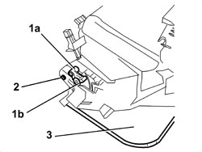

7040A14 FLAP FOR GLOVE COMPARTMENT IN DASHBOARD - R.R.
- Path
- Procedures > 70 FITTINGS > 7040 BODY INTERIOR FITTINGS AND TRIM > 7040A PASSENGER COMPARTMENT TRIMS > 7040A14 FLAP FOR GLOVE COMPARTMENT IN DASHBOARD - R.R.
- Kind
- repair procedure (removal / refitting; the operation number is the code)
- Applies to
- all engines; all production periods
- Interactive page
- https://sloeber94.github.io/elrnDB-aBrrSpdr/en/#/946002603
Applies to: all engines; all production periods
 Removing
Removing
 Refitting
RefittingFor the passenger side.
Op. 7040A65 CONSOLE SIDE CLOSING (ONE) - R.R.
Op. 7040G20 BULB HOLDER FOR COMPARTMENT LIGHTING IN DASHBOARD - R.R.
Op. 7040A31 DASHBOARD COMPARTMENT ASSEMBLY - R.R.
1. Working on both sides of the flap, undo the bolt (1a) and remove the opening clutch mechanism (1b).
2. Working on both sides of the flap, extract the pins.
3. Remove the flap.

Applies to: all engines; all production periods
Refitting
Removing- Check that the flap is not damaged.
- Position the flap and insert the pins.
- Place the opening clutch mechanisms in position, then tighten the bolts.
Op. 7040A31 DASHBOARD COMPARTMENT ASSEMBLY - R.R.
Op. 7040G20 BULB HOLDER FOR COMPARTMENT LIGHTING IN DASHBOARD - R.R.
Topics linked from this page (3)
- 7040A31 DASHBOARD COMPARTMENT ASSEMBLY - R.R.
- 7040A65 CONSOLE SIDE CLOSING (ONE) - R.R.
- 7040G20 BULB HOLDER FOR COMPARTMENT LIGHTING IN DASHBOARD - R.R.